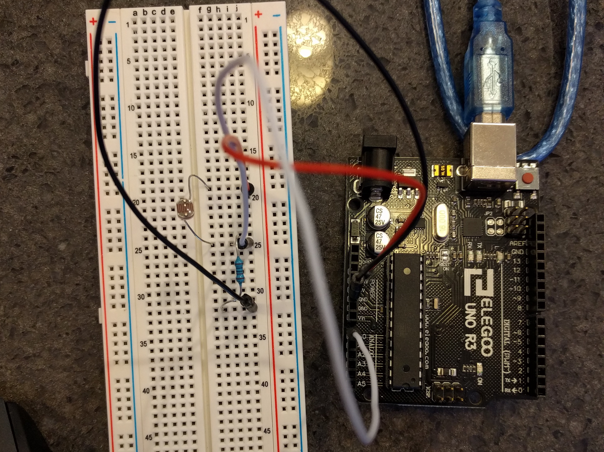
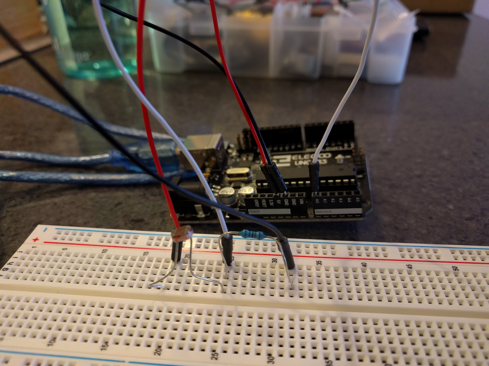

Colleen Carroll's Assignment 6!
Using a photoresistor, I can change the size of a "light" on a webpage. When the sensor picks up less light, the yellow circle gets smaller and when there is more light, the circle gets larger.
Operation

Circuit
 Firmware
/*
A6 - Colleen Carroll
Analog input from photoresistor, serial output
*/
// These constants won't change. They're used to give names to the pins used:
const int photoInPin = A0; // Analog input pin that the photoresistor is attached to
int photoValue = 0; // value read from the photoresistor
void setup() {
// initialize serial communications at 9600 bps
Serial.begin(9600);
}
void loop() {
// read the analog in values
photoValue = analogRead(photoInPin);
// print the results to the Serial Monitor
Serial.println(photoValue);
// wait 2 milliseconds before the next loop for the analog-to-digital
// converter to settle after the last reading
delay(2);
}
Webpage Code
var serial; // variable to hold an instance of the serialport library
var portName = '/dev/cu.usbmodem141101' //rename to the name of your port
var datain = 0; //some data coming in over serial!
var xPos = 0;
function setup() {
serial = new p5.SerialPort(); // make a new instance of the serialport library
serial.on('list', printList); // set a callback function for the serialport list event
serial.on('connected', serverConnected); // callback for connecting to the server
serial.on('open', portOpen); // callback for the port opening
serial.on('data', serialEvent); // callback for when new data arrives
serial.on('error', serialError); // callback for errors
serial.on('close', portClose); // callback for the port closing
serial.list(); // list the serial ports
serial.open(portName); // open a serial port
createCanvas(1200, 800);
background(0x08, 0x16, 0x40);
}
// get the list of ports:
function printList(portList) {
// portList is an array of serial port names
for (var i = 0; i < portList.length; i++) {
// Display the list the console:
print(i + " " + portList[i]);
}
}
function serverConnected() {
print('connected to server.');
}
function portOpen() {
print('the serial port opened.')
}
function serialError(err) {
print('Something went wrong with the serial port. ' + err);
}
function portClose() {
print('The serial port closed.');
}
function serialEvent() {
if (serial.available()) {
var inString = serial.readLine();
if (inString.length > 0) {
datain = Number(inString);
//console.log(datain);
}
}
}
function graphData(newData) {
// Set colors
fill(255, 204, 0);
stroke(0);
// calculatee circle radius to nearest 10 for a smoother animation
var radius = Math.ceil(newData / 10) * 10;
// draw circle
circle(600, 400, radius);
}
function draw() {
background(0);
fill(255);
graphData(datain);
}